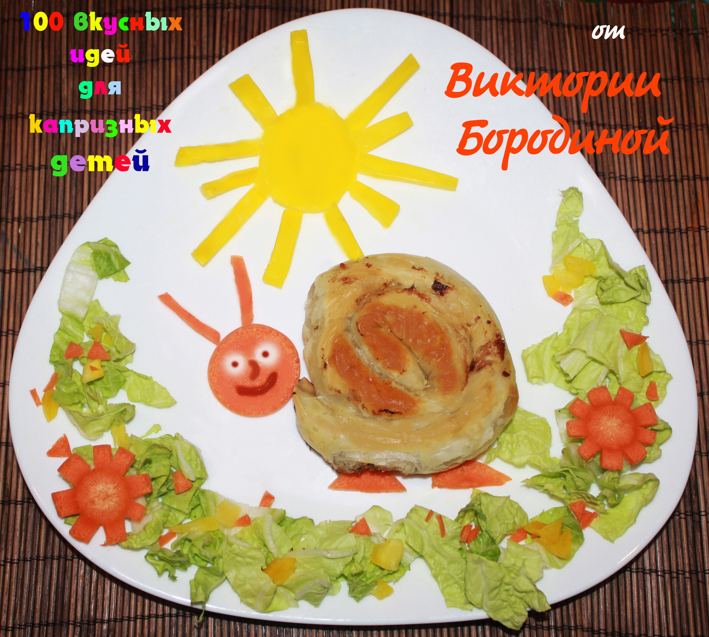

Улитка-бурек
Идеальное решение для завтрака - бурек. Это несладкая выпечка из тонкого вытяжного бездрожжевого теста с различными сытными начинками: с мясом, сыром, грибами или овощами. Используя готовые замороженные полуфабрикаты, Вы потратите на приготовление блюда около 35 минут: 15 минут – разморозка, ещё 15 минут уйдёт на запекание буреков в духовке при температуре 180-200 °С и 5 мин. на сервировку.